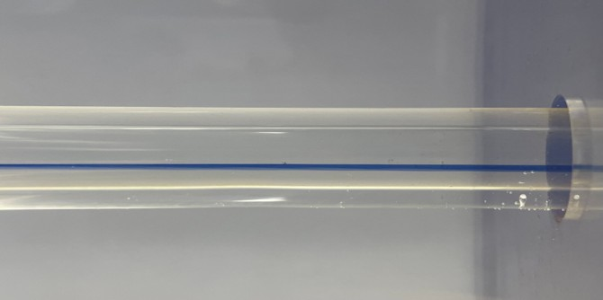
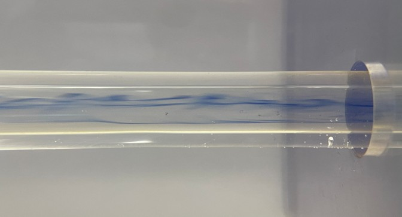
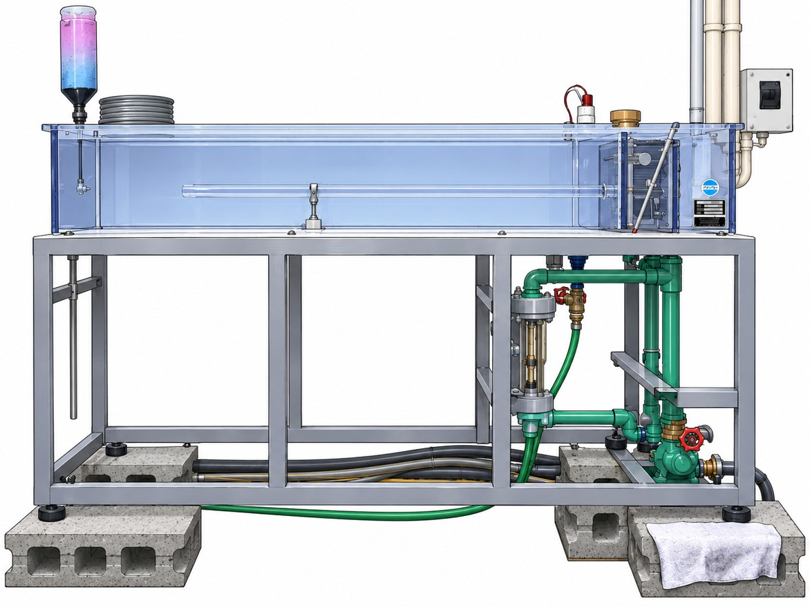
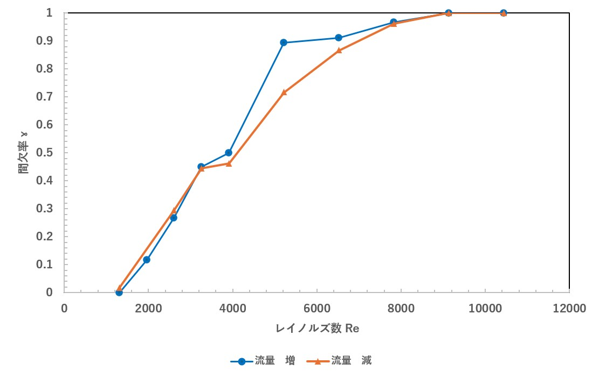
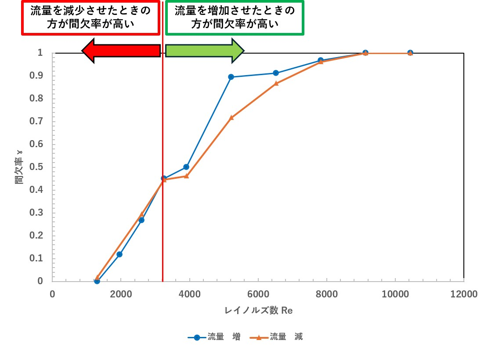
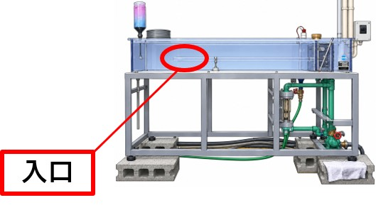

REYNOLDS FLOW VISUALIZATION



📍 層流か乱流かを判断する観察管（装置上部）
📍 流量調節弁（装置右下）
| 水温[℃] | 体積流量[L/h] | 流速[m/s] | レイノルズ数Re | 乱流時間[s] | 間欠率γ |
|---|---|---|---|---|---|
| 22.1 | 50 | 0.0786 | 1305 | 0 | 0.000 |
| 22.1 | 75 | 0.1179 | 1957 | 21 | 0.117 |
| 22.1 | 100 | 0.1572 | 2610 | 48 | 0.267 |
| 22.1 | 125 | 0.1965 | 3262 | 81 | 0.450 |
| 22.1 | 150 | 0.2358 | 3915 | 90 | 0.500 |
| 22.1 | 200 | 0.3144 | 5220 | 161 | 0.894 |
| 22.1 | 250 | 0.3930 | 6525 | 164 | 0.911 |
| 22.1 | 300 | 0.4716 | 7830 | 174 | 0.967 |
| 22.1 | 350 | 0.5502 | 9135 | 180 | 1.000 |
| 22.1 | 400 | 0.6288 | 10440 | 180 | 1.000 |
| 水温[℃] | 体積流量[L/h] | 流速[m/s] | レイノルズ数Re | 乱流時間[s] | 間欠率γ |
|---|---|---|---|---|---|
| 22.1 | 400 | 0.6288 | 10440 | 180 | 1.000 |
| 22.1 | 350 | 0.5502 | 9135 | 180 | 1.000 |
| 22.1 | 300 | 0.4716 | 7830 | 173 | 0.961 |
| 22.1 | 250 | 0.3930 | 6525 | 156 | 0.867 |
| 22.1 | 200 | 0.3144 | 5220 | 129 | 0.717 |
| 22.1 | 150 | 0.2358 | 3915 | 83 | 0.461 |
| 22.1 | 125 | 0.1965 | 3262 | 80 | 0.444 |
| 22.1 | 100 | 0.1572 | 2610 | 53 | 0.294 |
| 22.1 | 50 | 0.0786 | 1305 | 3 | 0.017 |
→ 次の図4でレイノルズ数 Re と間欠率 γ のグラフを示す

流量増加時と減少時で間欠率に差がみられた

◀ 流量を減少させたときの方が間欠率が高い流量を増加させたときの方が間欠率が高い ▶
| レイノルズ数 Re | 流量増加時の間欠率 | 流量減少時の間欠率 | 増加時 − 減少時の間欠率の差 |
|---|---|---|---|
| 1305 | 0 | 0.017 | −0.017 |
| 2610 | 0.267 | 0.294 | −0.027 |
| 3262 | 0.45 | 0.444 | 0.006 |
| 3915 | 0.5 | 0.461 | 0.039 |
| 5220 | 0.894 | 0.717 | 0.177 |
| 6525 | 0.911 | 0.867 | 0.044 |
| 7830 | 0.967 | 0.961 | 0.006 |
| 9135 | 1 | 1 | 0 |
→ 考察2を参照（Re = 5220 で差が最大）
・レイノルズの相似則：レイノルズ数が同じなら流れの状態も同じ
▼
レイノルズ数が同じ → 異なる管径や流体を用いても実験結果の流用が可能
・同じ太さの管の時：
流速が違う → 動粘度を調整
動粘度が違う → 流速を調整 乱流を維持！
② 流量増減時に間欠率に差がみられた理由

① 流量を増加させる場合と減少させる場合では，同じレイノルズ数に到達するまでの流れが異なる．
間欠率に差が生じた要因として，流量を減少させる場合，流量が大きいときに形成された乱れが残存し，流量を下げた後も乱流が観察されたと考えられる．一方，流量を増加させる場合は，低流量の状態から流れが発達する．この流れの違いが，間欠率の差に関係していると考えられる．
また，今回の実験では，他の実験装置の振動や周囲の活動による外乱も，流れの状態に影響した可能性がある．
さらに，入口付近で生じる擾乱は，層流から乱流への遷移に影響すると考えられる．
ただし，今回の実験では外乱の大きさを定量的に測定していないため，間欠率の差が生じた原因までを特定することはできない．よって，流量増減時の間欠率の差には，流れの違いや外乱が関係している可能性があると考えた．
レイノルズ数が小さい領域（Re = 1305～2610）で，流量減少時の間欠率が流量増加時よりも高くなっている要因
▼
③ 円環入り口に擾乱を与えると，層流から乱流に遷移するレイノルズ数は変化する．どのような擾乱を与えても乱流にならない上限のレイノルズ数の値はどこか？（臨界レイノルズ数）
| 体積流量[L/h] | 計測時間[s] | 乱流計測時間[s] | レイノルズ数 | 間欠率 |
|---|---|---|---|---|
| 50 | 180 | 0 | 1305 | 0 |
| 75 | 180 | 21 | 1957 | 0.117 |
| 100 | 180 | 48 | 2610 | 0.267 |
| 100 | 180 | 53 | 2610 | 0.294 |
| 50 | 180 | 3 | 1305 | 0.017 |
擾乱（じょうらん）